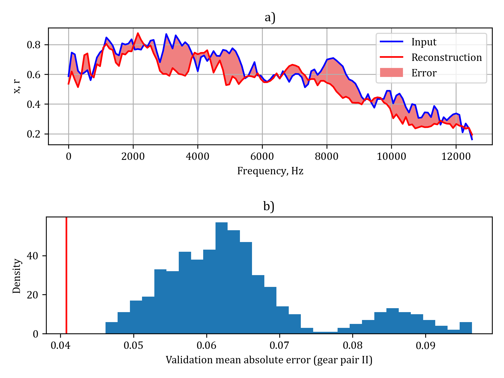

Gear fault detection by unsupervised deep learning of autoencoder
Used tools and packages
Python TensorFlow Scikit-learn NumPy Scipy PandasIntroduction
One of the key applications of deep neural networks in mechanical engineering is to predict the failure of machine components in real-time based on the measurement of its vibrational signal. This approach states the alternative to conventional signal filtering and analysis in the time or frequency domain. Failure should be detected at the earliest stage possible to prevent damage to the whole mechanical system. Usually, the neural network is trained with supervision to classify the damage of the components. Supervised learning can be difficult to perform since it requires data from the worn mechanical component and proper signal feature selection which gives information about relevant faults. In the case of high-power geared transmissions extensive fatigue testing is required to obtain reliable data for training. Another aspect is that such neural networks are trained only to predict predefined failures ex. pitting or tooth fracture and may not cover all possible failures occurring during real operation. To overcome the above-mentioned disadvantages a special neural network called autoencoder may be used. Autoencoder is a type of deep neural network which can reconstruct its input. Usually, they are used for feature extraction however they can work as anomaly detectors. For this purpose, the autoencoder neural network is trained with the aid of unlabeled data in which there are no or very few abnormal states. These kinds of data are usually easy to collect because they refer to the normal operation of the system. As a measure of fault (abnormal state) the training loss function is selected. If the autoencoder fails to reconstruct input with sufficient accuracy (obtained while training) it means that an abnormal state (failure) has occurred. The presented paper describes the possibility of the use of an autoencoder in the pitting detection of helical gears.
Data preparation
Data was acquired during the experiment that I conducted on a power circulation test stand on two sets of gears. The first one (gear pair I) whose teeth have been gas-nitrided (surface hardness 600-750HV) provided necessary data for training and testing the neural network in normal operational conditions (without damage). The second gear pair (gear pair II) which was only quenched and tempered (surface hardness 28-30HRC) was used to test the ability of the neural network to detect a failure. During the tests the vertical (perpendicular to the shafts’ plane) vibrations of the tested gear case were acquired. The sampling frequency was 25kHz while the signal duration was 1s which gives 25000 samples for each measurement. Measurement were taken several times during the operation. Before training and testing the neural network, data was prepared as described in this section. Firstly, the measured and acquired vibrational signal was split into 25 segments (b):
Next, a segment of the signal is transformed into the frequency domain with the aid of power spectral density (Paa) estimation according to Welch’s approach with the Hann window function (c). Furthermore, the power spectral density is presented in dB scale by 10log(Paa) (d). Finally, this logarithmic power spectral density is normalized (e). The procedure mentioned above performed for all measurements gives 880 normalized periodograms in case of normal operation and 560 in case of damaged gears. Figure below shows the distribution of selected parameters of the obtained signals for two populations.
It can be seen that simple analysis within the time domain (a, b and d) does not provide sufficient information about the state of the gearbox operation. The density distribution of selected parameters varies over two populations however failure cannot be predicted since values of parameters are overlapping. The same conclusions can be drawn in the case of simple analysis within the frequency domain. There is no significant difference between the amplitude of harmonics corresponding to the frequency of meshing (>900Hz) for normal operation and failure (b).
Autoencoder architecture, training and validation
Autoencoder was designed as a deep neural network with five dense hidden layers:
As an input, the network takes normalized periodogram x (vector of length 129). This periodogram is next coded by the encoder to a vector h. Encoded vector h is the input layer for the decoder which reconstructs it to vector r (output layer). For all hidden layers the rectified linear unit (ReLU) activation function was used. The network was trained with the aid of randomly selected 70% periodograms captured for normal operation of the gearbox, which gives 616 training samples. The other 30% (264 samples) were used for validation. As the measure of loss, the mean absolute error was applied. A threshold value above which the state of the gearbox will be classified as an anomaly (failure) was calculated with the formula:
where MAEi is an i-th mean absolute error for training, and n=616 is the number of training data. In other words, the gear pair will be classified as faulty if the reconstruction error is at least one and a half standard deviations above the mean training error. Fig. below presents the results of classification for testing data (gear pair I without failure).
It can be seen that reconstruction matches the input, however, 10.2% of the test data were incorrectly classified as an anomaly, while in most cases (89.8%) the normal state of operation was predicted correctly.
Results
The main goal of the designed approach is the ability of the neural network to detect a failure - even the smallest initial pitting. To check this ability the periodograms of gear pair II were used as inputs. Fig below shows the results of the state prediction in case of damaged teeth.
It can be seen that the reconstruction error is large. The greatest differences occur within the frequency range between 2000 and 4000Hz. Such results suggest that the sign of the pitting might be observed as the increase in the amplitude of third and fourth-order harmonics of transmission error (meshing frequency is 1250Hz). This increase however was too subtle to predict a failure with just simple analysis in the frequency domain. The neural network predicted correctly the state of failure in all cases. Fig. below shows the confusion matrix which summarizes the results of the state prediction experiment.

The neural network is very effective (100%) in failure detection in case of true positive classification. This type of classification is crucial for any accountable mechanical systems since every failure should be detected quickly to prevent further damage. The method was able to predict properly 89.8% of normal states in true negative classification. The network misclassified only 10.2% (false positive) states where the gearbox was actually without damage. The above results give a very high precision (0.90), F1-score (0.95) and recall (1.00). Based on performed experiments it can be seen (Fig. 11) that the threshold could be shifted to 0.045. This could lead to an increase in correctly classified true negative cases.
Summary
Based on the performed experiment the following conclusions can be drawn:
- the proposed method was efficient and could detect even the initial state of pitting formation which may be difficult with the aid of signal analysis in the time and frequency domain,
- the effectiveness was 100% in failure detection (true positive) and 89.8% in normal state prediction (true negative), which gives a very high F1-measure (0.95)
- a slight increase in threshold value could increase the performance of the neural network in case of true negative classification,
- vibration excitation due to pitting is observed in a higher order of harmonics.